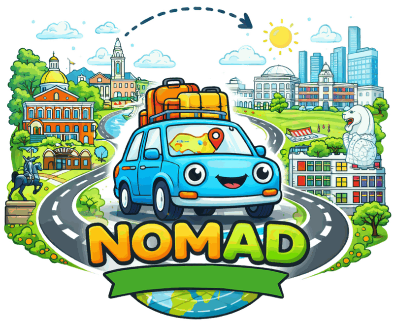
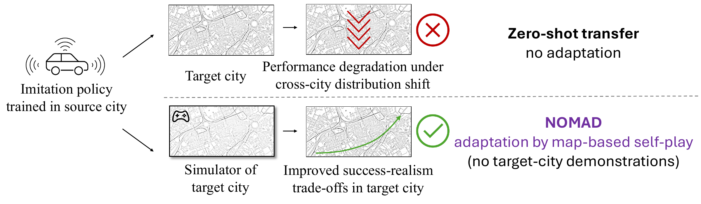
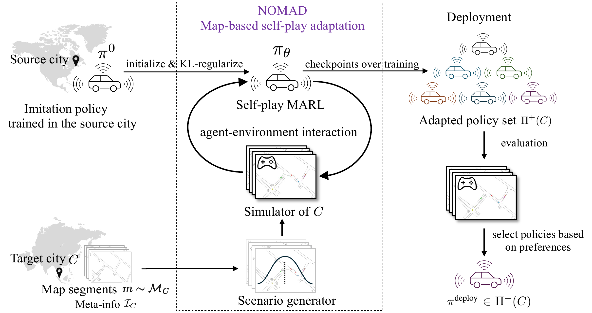
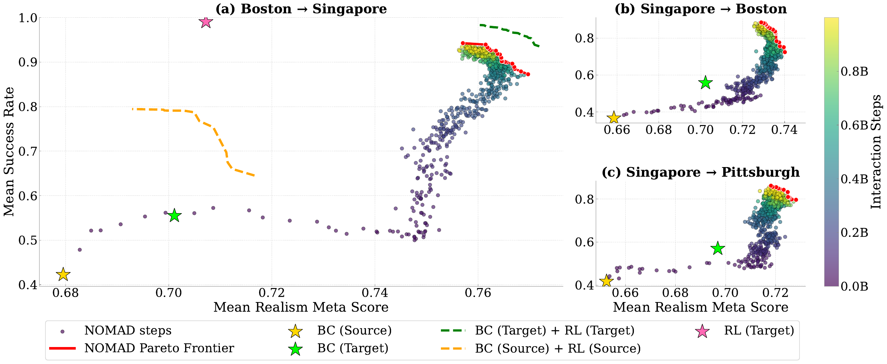

We show that self-play multi-agent reinforcement learning can adapt a driving policy to a substantially different target city using only the map and meta-information, without requiring any human demonstrations from that city.

While autonomous vehicles have achieved reliable performance within specific operating regions, their deployment to new cities remains costly and slow. A key bottleneck is the need to collect many human demonstration trajectories when adapting driving policies to new cities that differ from those seen in training in terms of road geometry, traffic rules, and interaction patterns. In this paper, we show that self-play multi-agent reinforcement learning can adapt a driving policy to a substantially different target city using only the map and meta-information, without requiring any human demonstrations from that city. We introduce NO data Map-based self-play for Autonomous Driving (NOMAD), which enables policy adaptation in a simulator constructed based on the target-city map. Using a simple reward function, NOMAD substantially improves both task success rate and trajectory realism in target cities, demonstrating an effective and scalable alternative to data-intensive city-transfer methods.
We compare the zero-shot transferred policy with the policy adapted by NOMAD under identical initial conditions, in both transfer directions between Boston and Singapore. Numbers identify the controlled vehicles and \(g_i\) marks the goal of vehicle \(i\). Controlled vehicles are drawn in blue and static vehicles in dark navy; a controlled vehicle turns red while it is in collision and orange while it is off-road. The counters give the cumulative number of controlled vehicles that collided (×), went off-road (▲), and reached their goals (✓).
The zero-shot policy, trained in Boston, fails to account for the narrower lane geometry commonly found in Singapore: by \(t_{\mathrm{sim}}=2.4\) s vehicles 1 and 2 have both drifted outside the drivable region, and vehicle 1 never reaches its goal. In contrast, NOMAD adapts to the target-city road geometry through map-based self-play and maintains stable lane-centering throughout the maneuver, so both vehicles reach their goals.
The zero-shot policy exhibits a systematic bias toward right-hand driving learned in the source city: vehicles 1 (moving down) and 2 (moving up) both drift to their right, toward the opposing lane, and collide head-on at \(t_{\mathrm{sim}}=3.3\) s in the left-hand traffic setting of Singapore, and neither vehicle reaches its goal. In contrast, NOMAD adapts its lane-keeping behavior through map-based self-play and consistently drives on the correct side of the road, so both vehicles reach their goals.
Trained under left-hand traffic, the zero-shot policy keeps driving on the left in Boston: vehicle 2 drifts into the lower lane, which belongs to oncoming traffic, and collides head-on with vehicle 1 at \(t_{\mathrm{sim}}=3.6\) s, and vehicle 4 drifts to its left until it leaves the road. By the end of the episode, three of the four controlled vehicles have collided, two have gone off-road, and none has reached its goal. Under NOMAD, vehicle 2 moves to the upper lane, on its right-hand side, and all vehicles keep to the right through the curve, so all four reach their goals without collision or off-road events.
The scene is rotated so that the vehicles of interest travel from left to right. Under the zero-shot policy, vehicle 1 fails to execute an early rightward avoidance maneuver and collides with the first static vehicle at \(t_{\mathrm{sim}}=2.8\) s. Following the collision, it initiates a right-turn corrective action, whereas a leftward maneuver is required to avoid the second obstacle, leading to a second collision at \(t_{\mathrm{sim}}=8.0\) s. In contrast, NOMAD selects appropriate avoidance actions at both decision points, and all three controlled vehicles reach their goals, illustrating improved closed-loop decision making under target-city geometric and obstacle-layout shifts.
The zero-shot policy exhibits miscalibrated interaction behavior: on the upper-left approach, vehicle 2 travels considerably faster than vehicle 3 ahead of it (about 10 vs. 6 m/s) and rear-ends it at \(t_{\mathrm{sim}}=2.3\) s, while at the intersection vehicle 6 enters without yielding to vehicle 4, causing a second collision at \(t_{\mathrm{sim}}=3.2\) s. In contrast, NOMAD learns more balanced speed regulation and yielding behavior through map-based self-play: all six controlled vehicles reach their goals without collision or off-road events.

Figure 1: NOMAD adapts source-city imitation policies to new cities without target-city demonstrations. Top: Zero-shot deployment of an imitation policy trained in a source city into a target city leads to performance degradation due to cross-city distribution shift. Bottom: NOMAD adapts the same policy to the target city using only the target-city map and easily accessible meta-information by performing map-based self-play multi-agent reinforcement learning in a simulator of the new city. This adaptation substantially improves the policy's success rate and realism in the new city.

Figure 2: NOMAD overview. Starting from a source-city imitation policy \(\pi^0\), NOMAD adapts it to a target city \(C\) using map segments \(m\sim \mathcal{M}_C\) and meta-information \(\mathcal{I}_C\). A scenario generator samples initial states and goals. The generated scenarios are loaded in a data-driven multi-agent driving simulator, yielding a simulator of \(C\). The policy \(\pi_\theta\) is initialized from \(\pi^0\) and optimized via KL-regularized self-play MARL. We use a minimal reward function (goal achievement, collision and off-road avoidance) coupled with a KL-divergence constraint that anchors the policy to the source-city imitation policy. Checkpoints along training yield an adapted policy set \(\Pi^+(C)\), from which practitioners select a deployment policy \(\pi^{\text{deploy}}\) to suit their preferences.
For realism, we adopt the Waymo Open Sim Agents Challenge (WOSAC) evaluation metric. WOSAC aggregates weighted components over kinematics (e.g., speed and acceleration), interaction features (e.g., time-to-collision and collisions), and map compliance (e.g., road departures).

Figure 3: NOMAD consistently improves the success–realism Pareto frontier in unseen target cities. We plot mean success rate versus mean realism meta score over 5 runs for three transfer settings: (a) Boston-to-Singapore (primary), (b) Singapore-to-Boston, and (c) Singapore-to-Pittsburgh. Each dot is a NOMAD training checkpoint, colored by the cumulative number of interaction steps; the red dashed curve denotes the empirical Pareto frontier over NOMAD checkpoints. Stars denote BC reference policies: the zero-shot source-city BC policy \(\pi^0\) (BC (Source)) and behavior cloning on target-city demonstrations (BC (Target)). Dashed curves denote RL-based ablations: BC (Target)-initialized self-play on logged target-city scenarios (BC (Target) + RL (Target)), BC (Source)-initialized self-play on logged source-city scenarios (BC (Source) + RL (Source)), and RL from scratch on generated target-city scenarios (RL (Target)).
Table 1: NOMAD substantially improves both success and realism over zero-shot transfer and imitation baselines. We report success rate and realism meta score for representative policies in closed-loop Singapore evaluation. \(\pi_d^{\text{expert}}\) denotes a policy obtained by inferring actions from logged expert trajectories and discretizing them to match the action space; its realism meta score serves as an approximate upper bound under the current POSG formulation.
| Policy | Realism Meta Score | Success Rate |
|---|---|---|
| \(\pi_d^{\text{expert}}\) | 0.8056 | 88.26% |
| Random | 0.4074 | 4.30% |
| Constant Velocity | 0.6147 | 19.45% |
| \(\pi^0\) | 0.6795 | 42.25% |
| BC (Singapore) | 0.7011 | 55.49% |
| NOMAD Frontier | 0.7570~0.7697 | 87.28%~94.27% |
Table 2: NOMAD eliminates most failures in the target city. We report the failure rate and its breakdown by failure mode in closed-loop evaluation for Boston-to-Singapore and Singapore-to-Boston transfer. NOMAD results are reported as mean ± standard deviation over 5 runs.
| Transfer | Policy | Failure | Off-road only | Collision only | Both | Neither (timeout) |
|---|---|---|---|---|---|---|
| Boston → Singapore | \(\pi^0\) | 57.7% | 33.3% | 1.2% | 2.7% | 20.5% |
| NOMAD | 7.7% ± 1.8 | 0.6% ± 0.2 | 0.4% ± 0.2 | 0.3% ± 0.3 | 6.5% ± 1.7 | |
| Singapore → Boston | \(\pi^0\) | 63.3% | 18.8% | 3.1% | 8.1% | 33.3% |
| NOMAD | 13.6% ± 5.6 | 1.3% ± 0.3 | 1.5% ± 0.5 | 1.1% ± 0.3 | 9.7% ± 4.3 |
1. Map coverage: NOMAD uses lane-level maps to generate training scenarios, so map coverage and scenario representativeness matter for adaptation; incomplete map annotations (e.g., curbside parking or unmapped access areas) can leave some configurations under-represented during training.
2. Driving culture: Differences in local driving culture and social conventions remain challenging to capture through map structure alone, underscoring the need for richer representations of local interaction norms beyond geometric and traffic-rule information.
3. Simulation fidelity: Our simulation abstracts perception and low-level vehicle dynamics through a delta-pose action space, as is standard in closed-loop planning benchmarks; validating NOMAD in higher-fidelity simulators is an important complementary direction. Our results should be read as a cost-effective tool for policy adaptation rather than a claim of deployment readiness.
@inproceedings{wang2026learning,
title = {Learning to Drive in New Cities Without Human Demonstrations},
author = {Wang, Zilin and Rahmani, Saeed and Cornelisse, Daphne and Sarkar, Bidipta and Goldie, Alexander David and Foerster, Jakob Nicolaus and Whiteson, Shimon},
booktitle = {Advances in Neural Information Processing Systems},
year = {2026}
}